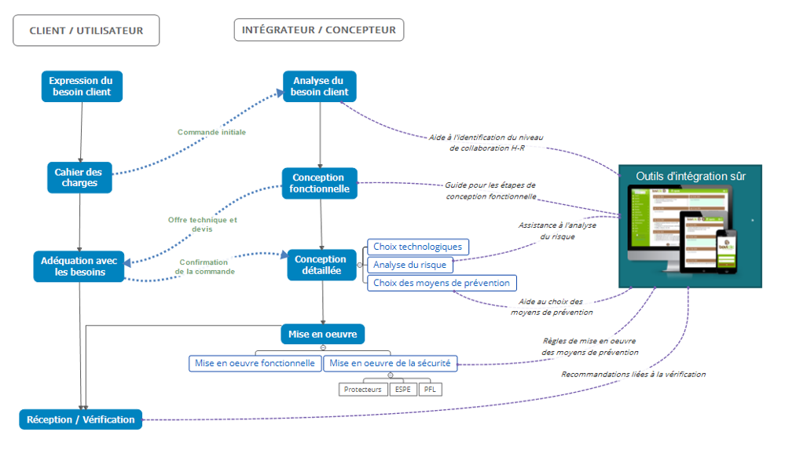

Quel est le but de notre application et à qui s'adresse t-elle ?
Pour assister l'intégration de robots collaboratifs, les chercheurs de l’INRS ont conçu une méthode sous la forme d’un arbre de décision. Cet outil permet d’évaluer, étape par étape, les tâches réalisées dans la cellule, les interactions homme-robot, et les mesures de prévention à appliquer. L’arbre s’appuie sur les normes de sécurité en vigueur, notamment la norme NF EN ISO 12100 pour l’évaluation des risques machine, et NF EN ISO 15066 pour les exigences spécifiques aux applications robotiques collaboratives. Il permet également de guider le choix entre différentes solutions techniques.
La figure 2 ci-dessous détaille le cycle d'intégration de l'application robotique collaborative
en mettant en évidence l'interaction entre le Client
et
l'Intégrateur.
Le but est donc d'être un véritable outil d'intégration sûr, capable d'accompagner les
concepteurs durant tout le processus de création et d'intégration de leurs cellules
collaboratives.
Ce processus se découpe en 5 phases distinctes, correspondant chacune à une ou plusieurs étapes
du cycle d'intégration
